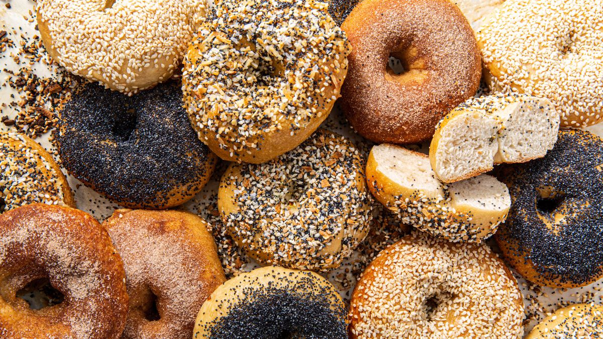

Bagels
Description
Kind of cute dogs with floppy ea- oh wait that's beagles, these are bagels.

Ingredients
- 1 T/22g diastatic malt powder or syrup
- 1½ cups + 1 T/355g warm (105ºF/40ºC) water
- 5 cups/680g high-gluten flour
- 2 teaspoons/14g salt
- ¾ teaspoon/2g instant yeast
- Sesame/poppy seeds
Steps
- The day before baking, dissolve the malt in the water. If you’re using active dry yeast instead of instant yeast, stir it in now and let stand for 5 to 10 minutes until it foams. If using instant yeast, just dissolve the malt in the water. The instant yeast does not need to be dissolved and will go in dry with the flour and salt (see below).
- Use a wooden spoon to blend the flour, salt, and instant yeast. Then add the malt-water mixture, mixing for about 10 minutes until the dough is smooth, silky, and stretchy.
- Form it into a thick log shape, covering and letting it rest for 20 minutes. Cut the log in half lengthwise and roll each portion into a strip of dough about 1 inch/2.5cm thick. Divide the strips lengthwise into four pieces about 3/4 inch/2cm wide, and roll each into a cylinder about 24 inches/60cm long and the thickness of a pencil. If you can’t get enough traction on your work surface, mist it very lightly with water or swab it with a damp paper towel.
- Fold the cylinder in the middle to form a double strip about 12 inches/30cm long and twist it into a tight spiral. Carefully seal the ends together to form a slender, twisted ring about 4 inches/10cm in diameter.
- Arrange the bagels on a cornmeal-dusted or parchment-lined baking sheet, cover well but loosely with plastic wrap and refrigerate overnight.
- The next day, heat oven to 460ºF/240ºC. Bring 3 to 4 quarts/3-4 liters water mixed with 2 tablespoons/40g diastatic malt to a rolling boil.
Take out only as many chilled bagels as you can boil and bake at one time and plunge them into the boiling water until they float.
Drain on a cooling rack and sprinkle with sesame seeds or poppy seeds or other toppings, if desired, and bake on cornmeal-dusted or parchment-lined baking sheets for 15 to 18 minutes until they are a rich brown. Let cool for at least 30 minutes before eating.